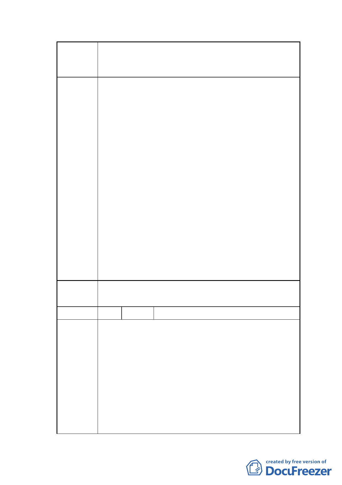

案名
變更臺北市士林區三玉段四小段 491 地號等 4 筆第三種
住宅區為綠地用地暨 491-2 地號等 4 筆道路用地為第三種
住宅區細部計畫案
地上仍有老舊建築物尚未開闢，為利本更新單元重建基
地之完整性與跨街廓整體開發，爰變更該計畫道路為住
宅區，除增加街廓整體設計及開發之效益外，同時配合
於基地東側留設等面積之綠地用地，提供居民休憩活動
的空間，變更後綠地用地需依都市更新權利變換計畫完
成開闢後捐贈予市府，並逕為登記為市府所有。
2.本計畫除變更部分第三種住宅區土地為綠地用地外，實
施者另於臨士東路二巷延伸中山北路 290 巷 7 弄側留設
6 公尺寬人行步道並予以綠美化，以提供舒適步行環
境。
3.本計畫綠地用地於後續景觀規劃時，將考量地區人行、
車行動線，避免於鄰接道路側栽種景觀植栽造成視線死
角。
4.本次都市計畫變更範圍未涉及三玉段四小段 505 地號
土地，該地號毗鄰之部分 492 地號土地變更為綠地後，
可增加該 5 層樓公寓之可視性。
委員會 同「市府回應說明」。
決議
編號
陳情理由
2 陳情人 黃承傳
主旨：貴府公開展覽之「變更臺北市士林區三玉段四小
段 491 地號等 4 筆第三種住宅區為綠地用地暨
491-2 地號等 4 筆道路用地為第三種住宅區細部計
畫案」敬表贊同，並就交通影響層面補陳個人意
見，併請卓參。
說明：
一、陳情人定居於本案鄰近之士東路將近三十年，對於
本計畫範圍內以及週邊之環境狀況堪稱熟稔。詳閱
計畫內容後，對於其整體構想之週延以及主管單位
之積極作為，深表贊同。
二、陳情人任教於國立交通大學交通運輸研究所多年，
- 12 -